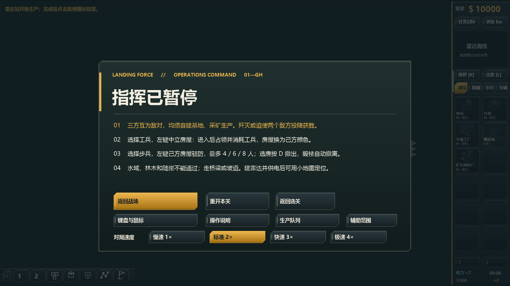

对局时间、速率与 AI 进攻节奏
2026-11-08 · 《断线前沿》本地未发布调整。
本轮把正式关卡默认速度设为 2×，教学关保留 1×。建造、生产、采矿、行进、装填和 AI 调度使用同一个时间倍率；镜头与鼠标操作保持原有手感。Esc 选项提供 1×／2×／3×／4×，生产倒计时随倍率换算，对局用时按实际进行时间显示。
调研范围与时间单位
参考资料包括固定版本的 RA2 兼容模式规则、YR 基础规则与实际 AI 编队定义。固定提交为 e4b5712df96ec3acb05ddbda9fe2ba63e30576ab。它们包含兼容与社区修正，不能代表所有零售版本、地图覆盖规则及平衡选项。
规则文件用 900 帧表示一个规则分钟，即 15 帧档才对应现实 60 秒。30 帧档推进两倍，60 帧档推进四倍。武器 ROF、AI 帧延时与规则分钟需要分别换算。公开计时实现也明确按游戏速度换算显示值，并区分单机无上限档和联机固定档。Phobos 计时代码 · 速度代码
本作保留已有的较低价格、现代单位和大地图。2× 对应上述规则时基的 30 帧节奏，渲染刷新独立；本作实际采用更细的固定模拟步长。以下原作换算是假设单设施、正常电力及相应倍率的近似值，实际还受生产离散取整、个体倍率、国家、难度和地图影响。
| 参数 | 原始数值 | 换算与含义 |
| BuildSpeed | 0.7 | 每 1000 造价约 630 帧，30 帧档约 21 秒 |
| MultipleFactory | 0.8 | 额外同类工厂的原版倍率；本作保留独立并行 |
| TeamDelays | 2000／2500／3500 帧 | 30 帧档约 66.7／83.3／116.7 秒；是组队检查 |
| AIHateDelays | 30／50／70 帧 | 30 帧档约 1／1.67／2.33 秒；选择敌人的延时 |
| DissolveUnfilledTeamDelay | 5000 帧 | 30 帧档约 166.7 秒；空队处理 |
| RepairRate / RepairStep | 0.016 分钟／8 点 | 30 帧档约 0.48 秒应用一次修复 |
| BuildupTime | 0.06 分钟 | 30 帧档约 1.8 秒，具体还受素材影响 |
| GI M60 ROF | 20 帧 | 30 帧档约 0.67 秒 |
| Grizzly 105mm ROF | 60 帧 | 30 帧档约 2 秒 |
| Rhino 120mm ROF | 65 帧 | 30 帧档约 2.17 秒 |
| RA2 MTNK 基础建造 | 700 造价 | 30 帧档约 14.7 秒；参考 YR MTNK 的个体倍率 1.5 后约 22.05 秒 |
| RA2 HTNK 基础建造 | 900 造价 | 30 帧档约 18.9 秒；参考 YR HTNK 的个体倍率 1.3 后约 24.57 秒 |
应特别区分：TeamDelays 是组队检查／创建间隔，不能解读为每隔这么久必定有一波敌军抵达。DissolveUnfilledTeamDelay 处理没有成员的 AI 队伍；AIAutoDeployFrameDelay 对应 AI 步兵自动展开，不是基地车展开动画。公开扩展文档对组队延时也作了单独定义。AI 调度说明
实际 AI 配置包含三辆坦克的小组，也包含不同规模的混编任务。全体 TaskForce 的统计涵盖侦察、运输、工兵等用途，不能把所有小组都算作正面攻击波。此次据此把侦察、主攻、袭扰和基地回防分开，不再让所有队伍都等同一个人数门槛。
为什么旧版显得慢
1. 原先固定为 1×，没有可用的对局速度设置；整个大地图的行进与经济周转都按这一档推进。
2. AI 等第一笔矿款到账后才开始兵营；第二座精炼厂至少等到 160 个游戏秒，第二座车辆工厂至少等到 300 秒，而且额外要求保有十个战斗单位。
3. AI 约每 2 个游戏秒才决策一次；出击后再等 40～50 秒。后期不足六人的剩余部队可能长期不出发。
4. 主攻对象优先最近的敌对阵营，邻接 AI 互相牵制，资源岛上的玩家长期未被覆盖。旧版被动开局推演中，第三关五方 AI 在十分钟内都没有向玩家派出新进攻队。
这些结论来自本项目代码与相同开局的调整前推演，不能推广为原作 AI 的行为。
已调整的规则
| 项目 | 本地实现 |
| 全局速度 | 正式关卡默认 2×，教学关 1×；选项可切换 1／2／3／4× |
| 行进与碰撞 | 使用固定小步推进；短暂长帧分批追赶，单次处理有上限，暂停不补跑 |
| 生产时间显示 | 按当前倍率和实际供电换算建筑、单位及队尾预计秒数；变速不重置进度 |
| 初期军事建设 | 精炼厂完工后即可安排兵营，无需额外等待第一笔入账 |
| 经济扩张 | 以每座精炼厂约两辆矿车为目标，上限四辆；第二厂可从 90 游戏秒起按实际资金规划 |
| 军工扩产 | 第二车辆工厂可从 180 秒、六个现役战斗单位及相应预算开始；第二兵营可从 210 秒开始 |
| 预算 | 降低超出实际建筑价格的囤款门槛，仍计算未付款订单和建造项目，不产生负债 |
| 决策 | 每阵营约 0.75 游戏秒检查一次，仍错开各阵营的规划工作 |
| 主攻队 | 初期三人、后期五人为常规门槛；额外等待 18 秒后可由两人小队出动；单队最多八人 |
| 再出击 | 基础间隔 24 秒，阵营错开 0～6 秒；实际仍受兵力、战斗和经济限制 |
| 袭扰队 | 两至三人的独立任务，检查长期未被出击覆盖的敌对阵营，持续侦察和施压 |
| 阵营公平 | 袭扰排序没有玩家专属加分；仍为各自敌对。只使用已探索到的军队信息及既定出生区域 |
| 任务延续 | 对手已灭、长期无有效交战或路线结束时重新安排任务；近距离正在交战者保持作战 |
| 驻防 | 早期限制常驻人数，保留可用于外出的部队 |
| 路线重试 | 单位的多个备选落点分步尝试，避免在一次更新里连续进行 17 次搜索；失败建造选址短暂冷却后再试 |
| 大地图寻路 | 首要路径代价相同的候选点优先靠近目标；长路线分段整理减少重复整段检测，临时交通网格复用数组 |
| 追击更新 | 保留仍有效的长绕行路线，目标小幅移动不再触发整图重算；近距离开火和确实受阻的处理保留 |
| 绘制与悬停 | 阴影、悬停、血条和驻防文字先作范围判断，再处理贴图；可见模型、血条和阴影保持原样 |
初始资金仍为每方 1150，使用相同价格、扣款及工时规则；每座兵营／工厂继续独立排产，容量仍为 30 单。双方的单位伤害、生命、尺寸、占格和碰撞参数均保留。雷达、卫星、驻防、投降和原有鼠标快捷键保留。
本作在默认速度下的时间
下表为资金充足、单设施、正常电力时的基础值。排队、资金短缺、堵门及建造落位另计。价格保持本作数值，因此绝对时间与原作不同。
| 本作建筑／单位 | 价格 | 旧默认 1× | 新默认 2× |
| 电站 | 170 | 7.14 秒 | 3.57 秒 |
| 兵营 | 210 | 8.82 秒 | 4.41 秒 |
| 车辆工厂 | 380 | 15.96 秒 | 7.98 秒 |
| 雷达站 | 240 | 10.08 秒 | 5.04 秒 |
| 间谍卫星 | 750 | 31.50 秒 | 15.75 秒 |
| 防御阵地 | 235 | 9.87 秒 | 4.94 秒 |
| 步枪兵 | 85 | 3.57 秒 | 1.79 秒 |
| 反装甲兵 | 135 | 5.67 秒 | 2.83 秒 |
| 工兵 | 95 | 3.99 秒 | 2.00 秒 |
| 步兵战车 | 185 | 7.77 秒 | 3.89 秒 |
| 主战坦克 | 290 | 12.18 秒 | 6.09 秒 |
| 自行火炮 | 315 | 13.23 秒 | 6.62 秒 |
| 工程车 | 340 | 14.28 秒 | 7.14 秒 |
| 矿石精炼厂 | 390 | 16.38 秒 | 8.19 秒 |
| 采矿车 | 195 | 8.19 秒 | 4.10 秒 |
矿车容量仍为 180，纯采集从 5 秒缩为 2.5 秒，卸货从 1.6 秒缩为 0.8 秒；实际往返和排队另计。建筑维修每次恢复最多 8 点，正常间隔从 0.96 秒缩为 0.48 秒。普通建造落地动画由 1.2 个游戏秒换算为 0.6 个现实秒，素材和分层过程继续保留。
原作普通矿价值为 25／单位，HARV 容量 40、CMIN 容量 20；两者满载分别为 1000 和 500，但 Chrono Miner 的返程方式不同。一次采矿循环没有适用于全部矿点的固定秒数。本作继续采用行驶往返。原作 Speed 字段也不能直接当成“格／秒”；本作通过统一时钟加速已有行进模型，不误用这个单位。参考矿车、矿种和移动配置
相同开局的前后推演
测试中玩家仅展开基地，不造兵、不干预 AI。双方从各自真实初始单位、军费及矿田出发。离线使用相同的 0.05 游戏秒步长，最长推演 600 游戏秒；出现胜负时停止。下表按各版本默认倍率换算为现实秒，属于可复查的控制条件结果，不是所有实战的保证。
| 场景／指标 | 调整前默认 | 调整后默认 |
| 第二关 · 最早车辆工厂完工 | 68.5 秒 | 27.4 秒 |
| 第二关 · 首次派新队伍前往我方 | 404.9 秒 | 44.4 秒 |
| 第二关 · 首次进入我方附近 | 476.6 秒 | 84.0 秒 |
| 第二关 · 我方首次受击 | 491.1 秒 | 90.9 秒 |
| 第三关 · 最早车辆工厂完工 | 68.5 秒 | 27.4 秒 |
| 第三关 · 首次派新队伍前往我方 | 600 游戏秒观察窗内未出现 | 58.0 秒 |
| 第三关 · 首次进入我方附近 | 600 游戏秒观察窗内未出现 | 89.8 秒 |
| 第三关 · 我方首次受击 | 600 游戏秒观察窗内未出现 | 159.8 秒 |
“接近”定义为武装部队进入我方出生区域 800 世界单位内，不等同于已经开火；“首次受击”是实际伤害事件。短队可能被挡回，其他 AI 也会互相争夺与被歼灭。原始分阵营记录：调整前 · 调整后。
验证与使用
Esc 打开选项，最下方选择对局速度。标准 2× 为正式关卡默认值，教学保留较慢节奏。
专项入口：./scripts/build.ps1 -TempoVerify；同时导出设置及运行截图：-TempoPreview。检查覆盖四档速度在 30／60／144 渲染回调频率下的时间、行进和支付一致性，长帧预算、暂停、倒计时、改速保留进度、公平出击、任务超时及分步重试。另回归现有经济、建造、并行生产、教学、键鼠、寻路、滚屏和六方关卡。
速度设置 · 六方运行截图 · 公开资料索引与校验
已通过节奏专项、85 键位与原有九组回归；寻路与绘制调整后重新运行完整回归。
原生不透明绘制目标测量：Six-faction 2x + native 1920x1080 scrolling: 336 samples, median 12.2ms, p95 106.6ms, max 737.2ms, >33ms 44; living entities 233, game time 279.5. Simulation median/p95 2.4/16.2ms; rendering median/p95 8.6/96.8ms.
按真实耗时反馈的短窗口：Six-faction measured-time loop: 7.46 game seconds / 3.84 active real seconds = 1.94x; 85 frames, interval median 30.8ms p95 189.9ms.
以上为本机测试窗口样本，单次最长值和连续刷新均记录，不代表所有设备的恒定帧率。冷缓存和大规模场景仍有长帧，负载很高时实际倍速会偏离设定目标。
本轮仅本地修改，没有提交、推送或发布 GitHub。
速度设置

测试中的实体数是全图存活实体数，并非同屏数量；视角连续滚动至迷雾区域。这组数据覆盖全局 AI 与滚屏负载，不替代所有交战画面的帧率测试。